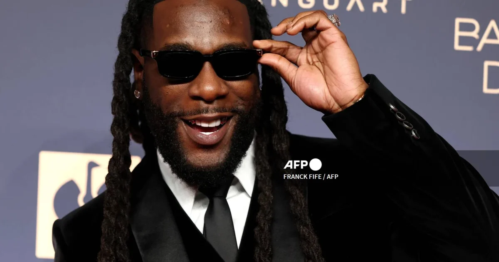

Security & Crime · 17 Nov 2026
FULL LIST: Nigerian artistes with the most Grammy nominations of all time

Grammy-winning singer Burna Boy has extended his record as Nigeria’s most-nominated artiste at the Grammy Awards, with 14 career nominations, following the announcement of the 2027 nominees. Read More: https://punchng.com/full-list-nigerian-artistes-with-the-most-grammy-nominations-of-all-time
Multiple independent publishers are reporting on the same development: FULL LIST: Nigerian artistes with the most Grammy nominations of all time.
The available reports place the development in the Security & Crime category. The accounts were compared for agreement on the central event rather than simply shared names or broad topics.
One of the available reports describes the development this way: Grammy-winning singer Burna Boy has extended his record as Nigeria’s most-nominated artiste at the Grammy Awards, with 14 career nominations, following the announcement of the 2027 nominees. Read More: https://punchng.com/full-list-nigerian-artistes-with-the-most-grammy-nominations-of-all-time/
Readers should consult the linked source reports for additional context, updates and details that may change as the story develops.
Sources
This article was produced by the C. O. Eric AI Newsroom from the cited sources. It is published only after automated evidence and safety checks.